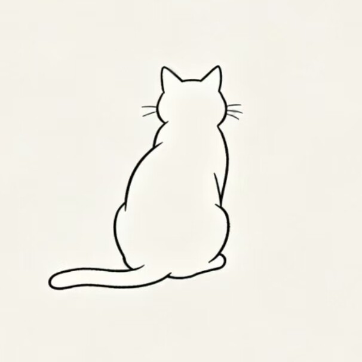

Szlqjc1
Security Engineering · AI Safety
Who I Am
- Evidence before conclusionsA claim is only worth what a rerun can reproduce. I would rather say "unverified" than sound certain.
- Skeptic by default — including of myselfI keep a second, independent line of thinking and let it attack the first one. If my own work survives that, I'll stand behind it.
- Decisions are worth more than optionsI don't collect choices, I commit to one and own the outcome. "We could still go back" reads to me as not having decided.
- I know where I over-reachI catch myself rationalising when a decision is uncomfortable. Naming it early is the only fix I've found that works.
- Independent on purposeI don't take on responsibilities beyond what I can carry well. Sharp work beats wide work, and I'd rather go deep on one thing than wide on five.
What Draws Me In
- Logic & deductionTracing a chain of reasoning to the place where it quietly breaks.
- Thinking across fieldsThe most interesting problems live in the gaps — where security meets behaviour, where systems meet people.
- Universe physicsNot as a career, as a way to keep a sense of scale. It is where my sense of proportion comes from.
- Craft & aestheticsCold palettes, deep space, engineered systems. I care about how something is built, not only what it does.
Currently
- Building toward AI securityNetwork security and reverse engineering first; AI safety is the direction I'm heading in.
- Working independentlySelf-directed research, built and verified end to end.
- Open to what fitsResearch roles, security engineering, or anything that values rigour over volume.